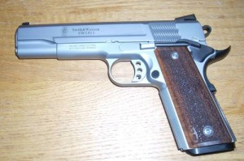

I took a defensive shooting / beginner competition class last October. The instructor insisted my gun did not fit my hands well. I really liked that gun (Springfield XD9) but I agreed. The same reasons are spelled out in these blog posts:
- From the Cornered Cat: “Big” excerpt: “When a handgun is too large for you, it does not mean you cannot shoot the gun at all. Obviously, you can! And you can enjoy it, too. But a self-defense gun should fit your hand as perfectly as possible.”
- From When the Balloon Goes up: “How to know if a pistol is too big (or too small)“
I don’t like to spend money. I set financial goals for myself and a buffer that will let me ride out multiple months of unemployment is a requirement in my life. I rode the dot.com boom and bust in San Francisco for 10 years. That buffer helps me sleep at night.
The instructor recommended I purchase a 1911. If I couldn’t afford that, I should look at a S&W M&P 9. I’m very invested in learning to shoot well, so after agonizing over the decision, I opted to look at the 1911 options. Then I had to shop for one. For competition I wanted a 5″‘ barrel (more accurate) in 9mm (more affordable to shoot). I looked a local shops, online, asked friends about options and, about a month later I snatched up the S&W 1911 in 9mm that appeared in the shop where I normally shoot. I paid cash to save about $40 in credit card fees.

{kind=link}
Brand new 1911
Here’s the total so far to switch to the new gun:
- $1290 – for the gun and 2 magazines
- $90 – 1 Holster in green by Daranich Tactical (offset and dropped)
- $70 – 2 mag carriers in green by Daranich Tactical (offset)
- $129 – 3 additional Wilson Combat magazines (for a total of 5)
- $80 – 4 hour class on complete take down for a 1911
- $90 – specialized cleaning tools and supplies from the take down class
- $156 – new grips, installed + two tools for take down + A Wilson Combat Take down Manual
Total: $1905

All the new gear.
I also spent $80 on a dropped offset holster for my Springfield XD9 to use until I got the 1911 purchases sorted out and $75 on a Woolrich Concealment vest. That brought my total expenditures, ignoring ammunition, to $2060 for October/November of 2012.
It took about 6 weeks to get the slim and get them installed. I basically had to start over learning to draw and to work the gun (because of the safety). I shot matches in late July, mid-September, and late October with my XD9. Due to these purchase and the new learning curve I didn’t shoot another match until January.
I haven’t taken any further classes and won’t until I can replace the cash I spent to switch guns. I still practice or shoot about once a week but no private or group lessons for now.
Was it a good decision? I’m not sure.
The down side: This gun is very finicky. The safety requires thinking about even more new things. It malfunctions easier. I have wasted lots of time at matches figuring out what’s wrong with my gun.
The upside: It’s thinner. More importantly, it’s heavier. I’m now able to shoot without re-positioning my hands on the gun between shots. When I’m ready to start shooting faster, the reduced recoil will help. The trigger is much lighter. I’m starting to take that for granted but it has surprised the friends that have shot this gun.
For now: I’m determined to learn as much as I can. I’m going to shoot with this gun for the rest of this year and then decide if I should be looking for something else.